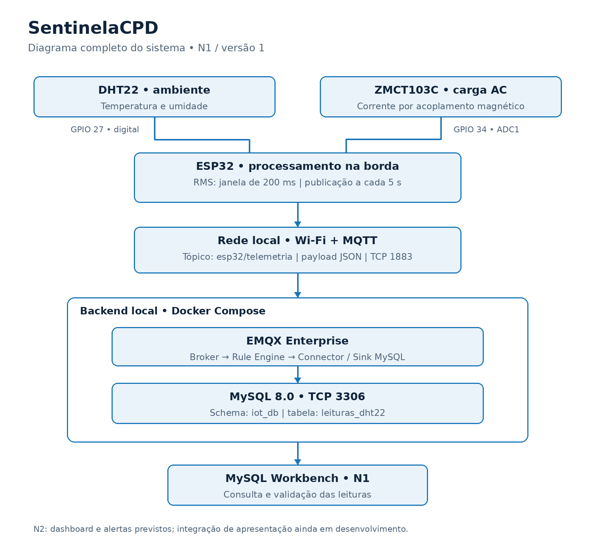
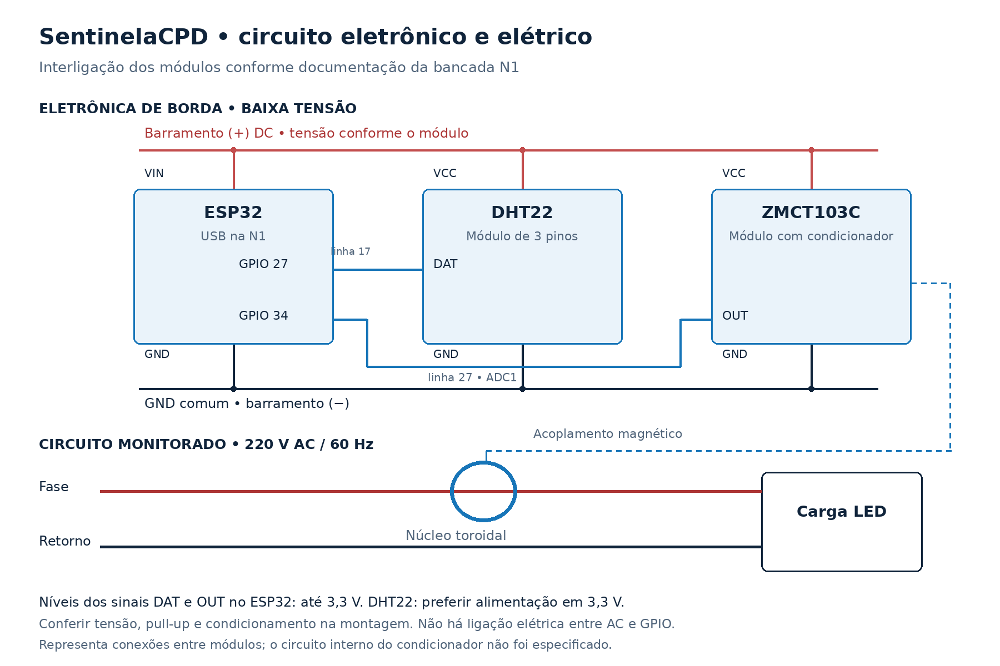
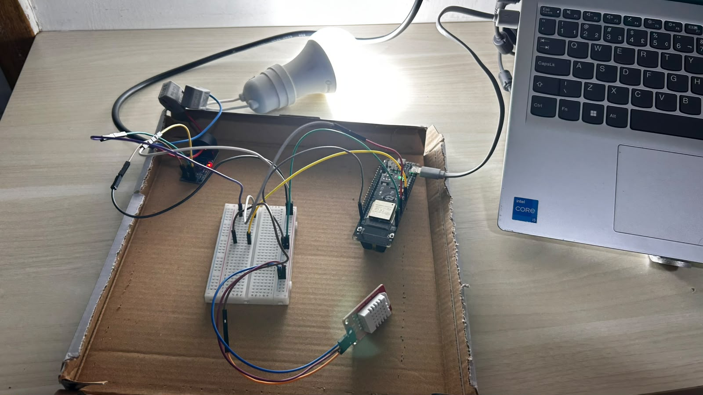
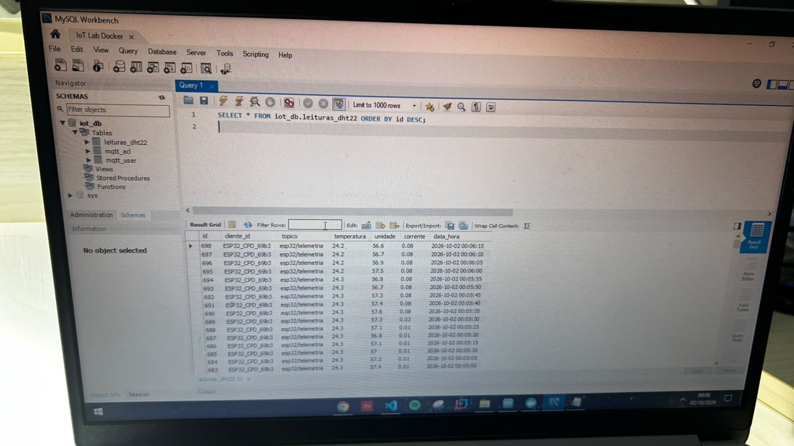

Dispositivo e plataforma
Coleta em tarefa própria, portal Wi-Fi, reconexão, contrato MQTT por dispositivo, ingestão, API, aplicativo móvel e dashboard web.
Temperatura, umidade e corrente elétrica coletadas no ESP32, enviadas por MQTT e organizadas em uma plataforma com histórico, alertas e acesso pelo aplicativo.
Implementação, evidências e próximos ensaios apresentados separadamente.
Coleta em tarefa própria, portal Wi-Fi, reconexão, contrato MQTT por dispositivo, ingestão, API, aplicativo móvel e dashboard web.
A N1 documenta ensaios com cargas LED e registros no MySQL. Há confirmação de leitura de temperatura e umidade e reconexão à rede salva nos testes de desenvolvimento.
Continuidade e autonomia da bateria, circuito de monitoramento da fonte, calibração e OTA com recuperação precisam de ensaios integrados na placa.
Página de apresentação do projeto. Os registros de bancada abaixo são históricos; este site não recebe telemetria ao vivo. Atualizado em .
Abrir o banner do projeto ↗A arquitetura atual usa um serviço de ingestão entre o broker e o banco de dados.
Serviços executáveis com Docker Compose em um servidor da rede local. Uma implantação remota depende de hospedagem, acesso de rede e configuração de segurança.
O ID fixo do ESP32 compõe o tópico MQTT. O ingestor valida os campos e grava as leituras, a versão do firmware e os eventos recebidos.
sentinela/<id>/telemetriasentinela/<id>/eventoMySQL mantém dispositivos, leituras, eventos, incidentes e alertas. A API FastAPI fornece acesso às interfaces; um serviço de notificações integra os alertas ao Telegram.
O backend recebe eventos de falta e retorno de fonte. Sua geração no equipamento depende do circuito de detecção configurado.
A conexão à rede local, o acesso ao broker e a gravação no banco são etapas distintas. O firmware publica em QoS 0; o retorno de publicação não confirma persistência no MySQL. MQTT sem TLS é destinado à bancada; o transporte TLS opcional exige configuração do broker, certificados e credenciais.

O diagrama registra a integração antiga por Data Bridge. O fluxo atual, apresentado acima, utiliza o ingestor Python, a API e as interfaces.
O firmware executa no ESP32 sem exigir um computador conectado durante a operação.
Uma tarefa FreeRTOS produz amostras a cada 5 segundos. Outra parte do programa atende Wi-Fi, portal e MQTT. As tentativas de conexão não são pré-condição para coletar sensores.
A fila mantém somente a última amostra. Ainda não há histórico persistente das medições offline.
Com o firmware iniciado, segurar BOOT por pelo menos 5 segundos reabre o portal protegido. A rede anterior permanece salva até a nova conectar e obter IP.
Função implementada; exige validação na placa. Use BOOT após iniciar, sem pressionar EN junto.
A janela dura até 10 minutos. Após cerca de 60 segundos sem Wi-Fi, o firmware tenta abrir o portal de recuperação. Durante a configuração, a coleta continua e o envio MQTT fica suspenso. O cadastro atual não implementa login corporativo ou portal de convidados.
| Componente | Conexão | Função e limite |
|---|---|---|
| DHT22 | GPIO 27 | Temperatura e umidade relativa. |
| ZMCT103C | GPIO 34 / ADC1 | Corrente RMS com remoção de offset e limiar de ruído; requer calibração. |
| BOOT | GPIO 0 por padrão | Pressão longa para abrir a configuração, sem apagar a rede salva. |
| Bateria 18650 | Suporte e alimentação da placa | Continuidade, alimentação dos sensores e autonomia a validar. |
| Monitoramento de energia | GPIOs opcionais | Tensão da bateria e fonte externa exigem circuitos próprios; desativados no exemplo. |
O cálculo RMS usa a variação do sinal em relação à média de uma janela de 200 ms e aplica um fator de calibração. Abaixo de 18 unidades ADC de RMS, a leitura é zerada para reduzir o piso de ruído. Isso é processamento de sinal, sem modelo de IA embarcado nesta versão. Corrente zero não comprova falta de tensão, e a medição não fornece diretamente potência ou consumo em kWh.
O código prepara a leitura de tensão e os eventos POWER_LOSS e POWER_RESTORED. São necessários um sinal condicionado de presença de fonte e um circuito adequado de medição da bateria.
No exemplo, os pinos estão em −1 e os dados saem como indisponíveis. O percentual, quando habilitado, é uma estimativa linear, não autonomia garantida. A fila de até quatro eventos é volátil.
Implementação por HTTPS, manifesto assinado com RSA, integridade SHA-256 e gravação no slot inativo. A nova aplicação passa por teste local, com retorno à anterior previsto pelo bootloader com rollback.
OTA desativado no exemplo: faltam configurar hospedagem, certificados, chave pública e detecção de fonte, além de validar atualização e recuperação na placa. Atualização exige alimentação externa confirmada.
Reconexão MQTT com espera progressiva e watchdog foram implementados. Abertura do portal e ciclo OTA são coordenados para evitar execução simultânea. Esses mecanismos não substituem testes integrados de falha.

Referência histórica de montagem. A configuração de energia e bateria da revisão atual requer circuito e níveis elétricos validados para o ESP32.

Registro da bancada usada para observar a resposta do sensor de corrente a uma carga LED. Não representa validação da alimentação por bateria ou de uma instalação em CPD.
Aplicativo móvel em React Native/Expo e dashboard web em React, com contrato de API compartilhado.
Consulta das métricas, atualização das leituras e histórico com agregações. Estados de dado recente, antigo ou indisponível ajudam a interpretar o que está sendo exibido.
Alertas por limites configurados, reconhecimento com nota e consulta de incidentes de energia. Limites são regras do servidor; não são enviados ao ESP32 nesta versão.
Perfis de administrador, operador e visualizador, com controle de ações na API. Esse login é independente da senha do portal Wi-Fi do dispositivo.
Os exemplos de configuração do app e do dashboard ativam dados simulados. Para mostrar telemetria real, é necessário desativar os mocks, apontar para uma API acessível e conferir a chegada de leituras novas. Este GitPage apresenta o projeto; ele não hospeda a API nem executa o aplicativo.
Recorte histórico da N1, em 2 de outubro de 2026. Não é transmissão ao vivo nem ensaio de precisão.
Amostras selecionadas em ordem cronológica; o eixo horizontal indica a sequência, sem escala temporal uniforme.
| Horário | Temperatura (°C) | Corrente (A) |
|---|---|---|
| 00:05:00 | 24,3 | 0,01 |
| 00:05:15 | 24,3 | 0,01 |
| 00:05:25 | 24,3 | 0,01 |
| 00:05:30 | 24,3 | 0,03 |
| 00:05:35 | 24,3 | 0,08 |
| 00:05:50 | 24,3 | 0,08 |
| 00:06:05 | 24,2 | 0,08 |
| 00:06:15 | 24,2 | 0,08 |

Registro documentado no repositório. Os valores descrevem o ensaio da época e não garantem precisão metrológica, ausência de perdas ou o estado atual do equipamento.